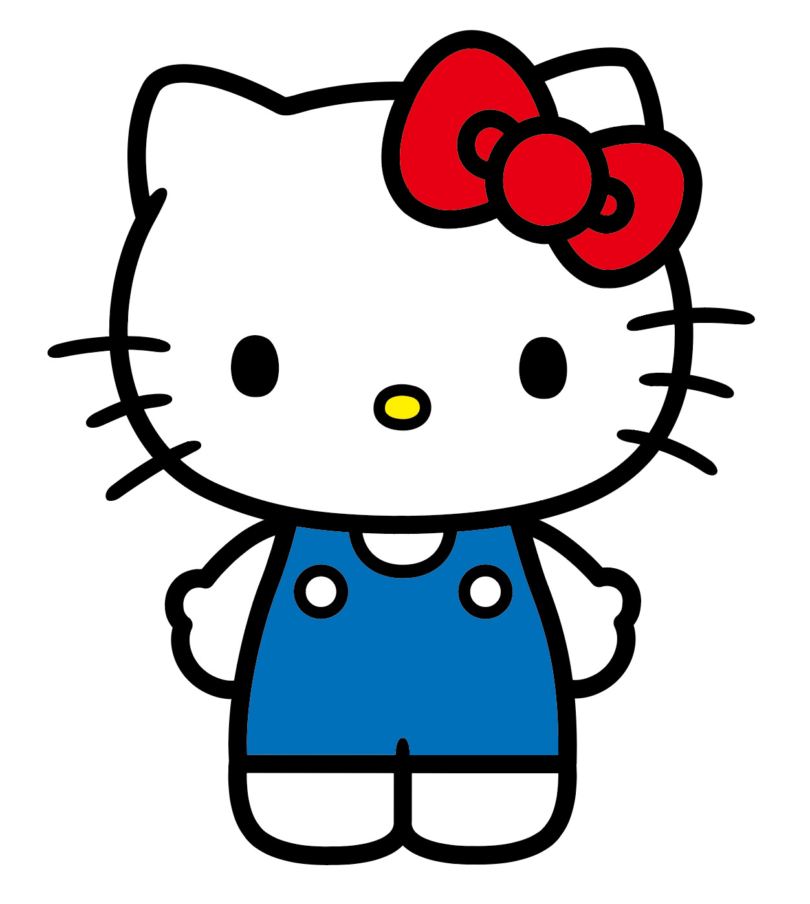
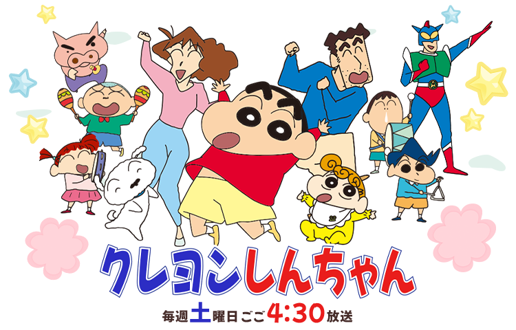

01 / RECOGNITION
一眼辨識
輪廓、色彩、語氣或標誌性道具，讓角色在縮圖、商品、短影音裡仍能被認出。
一份以角色、故事、媒介與商業化為主軸的研究報告。拆解長青 IP 如何被創造、被記住、持續更新，並跨越單一作品成為文化資產。
真正的長壽 IP 不只靠一個熱門角色，而是建立一組可反覆運作的系統：容易辨認、容易共感、容易延伸，而且能隨媒介與世代改變。
輪廓、色彩、語氣或標誌性道具，讓角色在縮圖、商品、短影音裡仍能被認出。
友情、家庭、成長、幽默、冒險或歸屬感，讓觀眾不必先理解整個世界觀也能投入。
角色關係與故事引擎可以不斷產生新情境，而不必每次推倒重來。
漫畫、動畫、電影、遊戲、展覽、商品與社群，各自承擔不同的接觸任務。
粉絲收藏、二創、語錄、儀式與共同記憶，讓 IP 超出原始內容的邊界。
維持角色核心，同時更新合作對象、產品形式與敘事語境。
以下以真實角色圖像作為案例視覺。圖檔已下載並存入本專案 assets/images/，每張圖下方提供專案圖檔、原始素材網址與官方來源頁面，方便直接查看及核對。來源標註用於研究，不代表取得重製或商業使用授權。
開啟專案圖檔 · 原始圖片網址 · ONE PIECE 官方角色頁
長篇主線、群像角色、島嶼式篇章與持續揭露的世界秘密，讓追更成為長期投入。

開啟專案圖檔 · 原始圖片網址 · Pokémon 官方圖鑑
可收集、可對戰、可交換的玩法，將角色喜愛轉成玩家之間的社交行為。

開啟專案圖檔 · 原始圖片網址 · Sanrio 官方企業資訊
簡單而可辨識的形象，能進入文具、服飾、家居與跨界合作，承接不同情緒與風格。
開啟專案圖檔 · 原始圖片網址 · Peanuts 官方角色介紹
漫畫日常、想像力與簡潔角色設計，讓作品既可輕鬆閱讀，也可承載生活態度。
英雄母題、特攝視覺與新世代角色接棒，讓品牌在保留熟悉感的同時更新入口。
家庭喜劇與時事諷刺持續映照社會變化，角色成為可不斷解讀的文化鏡子。
關鍵不是一開始就打造龐大宇宙，而是把一個極易辨識、能不斷製造日常衝突的孩子，放進觀眾熟悉的家庭與社會環境。

臼井儀人創作的漫畫於 1990 年開始連載。主角的直率、失禮與成人世界的反差，能從日常小事持續產生笑點。
1992 年電視動畫化，讓角色透過固定播出、聲音表演與重複觀看進入家庭生活，降低新觀眾的接觸門檻。
1993 年推出首部動畫電影。院線作品讓品牌從日常短篇延伸到更長的冒險、情緒與家庭共同觀影。
漫畫、動畫、電影與新媒體內容，負責吸引、留住與重新喚回觀眾。
展覽、主題活動、快閃店與互動體驗，讓粉絲從觀看者變成參與者。
收藏品、服飾、生活用品與授權合作，讓角色進入日常並創造營收。
健康的 IP 商業化不是無止境地推出商品，而是確保每一種延伸都符合角色氣質、受眾情感與品牌品質。
縮小到手機縮圖，角色仍然清楚嗎？
不靠單一梗，還能創造 50 個新情境嗎？
觀眾喜歡的是一時笑點，還是角色本身？
能否自然轉譯成短影音、動畫、遊戲或體驗？
新觀眾是否能不依賴舊觀眾的記憶進入？
商品與合作是否仍然像這個 IP？
七個案例的真實圖檔均已下載至 GitHub 專案的 assets/images/，網站以專案內相對路徑載入，降低外站禁止熱連結或網址失效造成圖片空白的風險。每張圖下方都提供本地圖檔、原始素材網址及可核對的官方資料來源。
研究提示：正式對外發布前，請逐項核對日期、授權條款與素材使用範圍。來源標註不等於取得圖片授權。